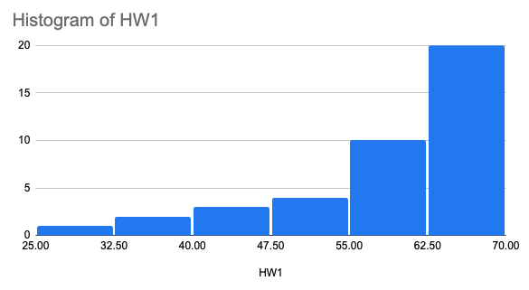
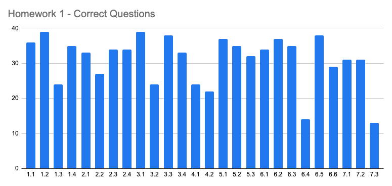
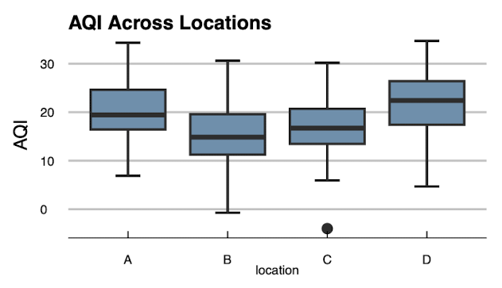

species island bill_length_mm bill_depth_mm flipper_length_mm body_mass_g
1 Adelie Torgersen 39.1 18.7 181 3750
2 Adelie Torgersen 39.5 17.4 186 3800
3 Adelie Torgersen 40.3 18 195 3250
4 Adelie Torgersen NA NA NA NA
5 Adelie Torgersen 36.7 19.3 193 3450
6 Adelie Torgersen 39.3 20.6 190 3650
7 Adelie Torgersen 38.9 17.8 181 3625
8 Adelie Torgersen 39.2 19.6 195 4675
9 Adelie Torgersen 34.1 18.1 193 3475
10 Adelie Torgersen 42 20.2 190 4250
# ℹ 334 more rows
# ℹ 2 more variables: sex <fct>, year <int>PSTAT 5A: Lecture 05
Conditional Probability and Independence
Homework 1 Review
Submission: Syllabus states that all course submissions (HW, labs, and quizzes) will be via Gradescope!
No late homework!
Please show your work!
Homework 1 - Distribution of Scores

Homework 1 - Questions and number of correct answers

Homework 1
Q1.3 asks for calculating the standard deviation.
Q3.2: Approximately what percent of AQI readings at Location D were less than 16?

Homework 1
Q4: Read Tranforming Data
Q6.4: D = the irst number selected was odd, and the irst number selected was even.
Q7.3: On a particular website, passwords must be exactly 7 characters long and consist of 3 letters (A through Z), followed by 2 digits (0 through 9), followed by another letter (A through Z), followed by a special character (!, @, #, $, %). Suppose now that the letters must still appear together, the digits must still appear together, and the special characters must still appear together, but the order in which these three categories of characters appear is now free to vary. How many passwords can be created using this new scheme?
Leadup
Remember how, last week, we discussed ways to compare two variables?
At the time, we only considered comparing two numerical variables and comparing one numerical and one categorical variable.
What about comparing two categorical variables?
As a concrete example, let’s return to…
Penguins, Revisited
Penguins, Subsetted
species island
1 Adelie Torgersen
2 Adelie Torgersen
3 Adelie Torgersen
4 Adelie Torgersen
5 Adelie Torgersen
6 Adelie Torgersen
7 Adelie Torgersen
8 Adelie Torgersen
9 Adelie Torgersen
10 Adelie Torgersen
# ℹ 334 more rowsSome Questions
Here are some questions we could ask:
- How many Adelie penguins were found on Biscoe island?
- Were any Gentoo penguins found on Torgersen island?
- What proportion of Chinstrap penguins were found on Dream island?
These sorts of questions are very nicely answered by way of what is known as a contingency table:
Biscoe Dream Torgersen
Adelie 44 56 52
Chinstrap 0 68 0
Gentoo 124 0 0- Thus, the answers to the questions above are: “44”, “no”, and “100%”, respectively.
Why Bring This Up Now?
You may be asking yourselves: “why bring this up now? Weren’t we talking about probability?”
Let’s re-examine the third question we asked on the previous slide: What proportion of Chinstrap penguins were found on Dream island?
What we really did when we answered this was to first restrict ourselves to the row of the contingency table corresponding to Chinstrap penguins, tally up the entries in that row, and then divided the number of penguins that were both Chinstrap and found on Dream Island by the row total.
- Let’s walk through another example. Suppose we want to know what proportion of Adelie penguins were found on Dream Island.
Biscoe Dream Torgersen
Adelie 44 56 52
Chinstrap 0 68 0
Gentoo 124 0 0By obtaining the first row total (i.e. the sum of the entries in the first row), we see there were \(44 + 56 + 52 = 152\) Adelie penguins in total.
- Of these \(152\) Adelie penguins, only 56 were found on Dream Island. Hence, the desired probability is \[ \frac{56}{152} \approx 36.84\% \]
Conditional Probability
- This leads us to the main topic of today’s lecture: conditional probabilities.
Definition
If \(E\) and \(F\) are two events with \(\mathbb{P}(F) \neq 0\), then we define the probability of \(E\) given \(F\), notated \(\mathbb{P}(E \mid F)\), to be \[ \mathbb{P}(E \mid F) = \frac{\mathbb{P}(E \cap F)}{\mathbb{P}(F)} \] If \(\mathbb{P}(F) = 0\), then \(\mathbb{P}(E \mid F)\) is not defined.
Interpretation
\(\mathbb{P}(E \mid F)\) essentially gives us the proportion of \(F\) that is explained by \(E\).
- As such, another way to think about conditional probabilities is as an “if-then” statement: if \(F\) has occurred, what is the probability that \(E\) also occurs?
If we adopt the classical approach to probability, we have \[\begin{align*} \mathbb{P}(E \mid F) & = \frac{\mathbb{P}(E \cap F)}{\mathbb{P}(F)} \\ & = \frac{\left( \frac{\#(E \cap F)}{\#(\Omega)} \right)}{\left( \frac{\#(F)}{\#(\Omega)} \right)} = \frac{\#(E \cap F)}{\#(F)} \end{align*}\]
This is also why contingency tables are so useful in the context of probability- the numerator above will be an entry in the table, and the denominator will be either a row-sum or a column-sum (depending on how the table was constructed).
Worked-Out Example
Worked-Out Exercise 1
75 UCSB students were surveyed about whether they like pineapple on pizza or not. In addition to their pineapple preference, their standing was also recorded.
Standing
Pineapple Freshman Junior Senior Sophomore
No 15 6 1 18
Yes 10 7 5 13A student is to be randomly selected. If the student is a Freshman, what is the probability that they like pineapple on pizza?
- As always, we begin by defining events and notation. Let \(P =\) “the student likes pineapple on pizza” and \(F =\) “the student is a freshman”. We then seek \(\mathbb{P}(P \mid F)\).
- Because the selection of the student is to be done at random, we can use the classical approach to probability.
As such, we need only to divide the number of students who are both Freshmen and like pineapple on pizza by the total number of Freshman.
- The number of students who are both Freshmen and like pineapple on pizza is 10
- The total number of Freshman is \(15 + 10 = 25\); i.e. the first column-sum
- Hence, the desired probability is \[ \mathbb{P}(P \mid F) = \frac{10}{25} = \boxed{ \frac{2}{5} = 40\%} \]
Multiplication Rule
- Recall that. provided \(\mathbb{P}(F) \neq 0\) \[ \mathbb{P}(E \mid F) = \frac{\mathbb{P}(E \cap F)}{\mathbb{P}(F)} \]
- We can multiply both sides of this equation by \(\mathbb{P}(F)\) to obtain the so-called multiplication rule:
The Multiplication Rule
\(\mathbb{P}(E \cap F) = \mathbb{P}(E \mid F) \cdot \mathbb{P}(F)\), for any events \(E\) and \(F\) with \(\mathbb{P}(F) \neq 0\).
Leadup
Note that “\(E\) and \(F\)” is the same as “\(F\) and \(E\)”.
That is: \(\mathbb{P}(E \cap F) = \mathbb{P}(F \cap E)\).
So, if we interchange the place of \(E\) and \(F\) in the multiplication rule, we obtain \[ \mathbb{P}(E \cap F) = \mathbb{P}(F \cap E) = \mathbb{P}(F \mid E) \cdot \mathbb{P}(E) \]
That is to say, we have \[\begin{align*} \mathbb{P}(E \cap F) & = \mathbb{P}(E \mid F) \cdot \mathbb{P}(F) = \mathbb{P}(F \mid E) \cdot \mathbb{P}(E) \end{align*}\]
Dividing the last equation by \(\mathbb{P}(F)\) yields an important result:
Bayes’ Rule
Bayes’ Rule
\[ \mathbb{P}(E \mid F) = \frac{\mathbb{P}(F \mid E) \cdot \mathbb{P}(E)}{\mathbb{P}(F)} \] for events \(E\) and \(F\) with \(\mathbb{P}(E) \neq 0\) and \(\mathbb{P}(F) \neq 0\).
- In a sense, Bayes’ Rule gives us a way to “reverse the order of a conditional”
Worked-Out Example
- As an illustration, let’s return to our pineapple-on-pizza contingency table:
Standing
Pineapple Freshman Junior Senior Sophomore
No 15 6 1 18
Yes 10 7 5 13Letting \(P\) and \(F\) be defined as before, let’s compute \(\mathbb{P}(P \mid F)\) using Bayes’ Rule.
We need to first compute \(\mathbb{P}(F \mid P)\), which we see to be \[ \mathbb{P}(F \mid P) = \frac{10}{10 + 7 + 5 + 13} = \frac{10}{35} \]
- Additionally, we find \[\begin{align*} \mathbb{P}(P) & = \frac{10 + 7 + 5 + 13}{75} = \frac{35}{75} \\ \mathbb{P}(F) & = \frac{15 + 10}{75} = \frac{25}{75} \end{align*}\]
- Hence, by Bayes’ Rule, \[\begin{align*} \mathbb{P}(P \mid F) & = \frac{\mathbb{P}(F \mid P) \cdot \mathbb{P}(P)}{\mathbb{P}(F)} \\ & = \frac{\left( \frac{10}{35} \right) \cdot \left( \frac{35}{75} \right) }{ \left( \frac{25}{75} \right) } = \frac{10}{75} \cdot \frac{75}{25} = \frac{10}{25} = \boxed{\frac{2}{5} = 40\%} \end{align*}\]
Hang In There!
At the moment, it may not seem obvious why Bayes’ Rule is helpful.
- It seems like it just makes more work!
But, rest assured, we will see a very practical application of Bayes’ Rule in a few slides.
Before we do, there’s just one more concept we need to discuss.
Leadup
- Consider an event \(F\), and another event \(E\).
- If \(F\) happened, it could have happened along with \(E\) or it could have happened along with not-\(E\).
- That is, \[ F = (F \cap E) \cup (F \cap E^\complement)\]
- Now, let’s take the probability of both sides. Since the events on the RHS are disjoint, the probability on the RHS just becomes a sum of probabilities: \[ \mathbb{P}(F) = \mathbb{P}(F \cap E) + \mathbb{P}(F \cap E^\complement) \]
- Finally, we apply the Multiplication Rule to the probabilities on the RHS to obtain \[ \mathbb{P}(F) = \mathbb{P}(F \mid E) \cdot \mathbb{P}(E) + \mathbb{P}(F \mid E^\complement) \cdot \mathbb{P}(E^\complement) \]
Law of Total Probability
The Law of Total Probability
Given two events \(E\) and \(F\) with \(\mathbb{P}(E) \neq 0\) and \(\mathbb{P}(F) \neq 0\), we have \[ \mathbb{P}(F) = \mathbb{P}(F \mid E) \cdot \mathbb{P}(E) + \mathbb{P}(F \mid E^\complement) \cdot \mathbb{P}(E^\complement) \]
- This is often useful in the context of a Bayes’ Rule problem.
Worked-Out Example
- Alright, let’s get down to business and tackle a slightly more real-world problem.
Worked-Out Exercise 1
It is known that a particular disease affects 5% of the population. There exists a test for this disease, but it is not perfect: there is a 10% chance it will return a “negative” result for a person who is actually infected, and there is a 8% chance it will return a “positive” result for a person who is actually healthy.
Arasha has taken a test for the disease, and it has indicated a “positive” result. What is the probability that Arasha actually has the disease?
Step 1: Define Events
As always, we start by defining events.
Let + denote “the test returns a positive result” and let \(D\) denote “Arasha actually has the disease.”
First of all, note that we are not interested in simply finding \(\mathbb{P}(D)\); rather, we are interested in finding \(\mathbb{P}(D \mid +)\).
- This is because Arasha has already been tested and received a positive result; this is information we need to incorporate into our beliefs!
Step 2: Translate the Information
With our events from Step 1, we now turn our attention to translating the information provided in the problem.
Since there is a \(10\%\) chance that the test returns a negative result given that a person actually has the disease, we have \[ \mathbb{P}(+^\complement \mid D) = 0.1 \]
Additionally, we are told that there is an \(8\%\) chance that the test returns a positive result given that a person does not have disease, we have \[ \mathbb{P}(+ \mid D^\complement) = 0.08 \]
Finally, we are told that 5% of the population has the disease; hence, \[ \mathbb{P}(D) = 0.05 \]
Step 2: Translate the Information
But wait- there’s more!
Given that a person has the disease, they will either test positive or test negative.
What that means is that \[ \mathbb{P}(+ \mid D) = 1 - \mathbb{P}(+^\complement \mid D) = 1 - 0.1 = 0.9 \]
Think of this as a modified complement rule
Similarly, \[ \mathbb{P}(+^\complement \mid D^\complement) = 1 - \mathbb{P}(+ \mid D^\complement) = 1 - 0.08 = 0.92 \]
Additionally, \[ \mathbb{P}(D^\complement) = 1 - \mathbb{P}(D) = 1 - 0.05 = 0.95 \]
Step 2: Translate the Information
- So, here’s a summary of everything we know, just from the problem statement: \[\begin{align*} \mathbb{P}(+ \mid D) = 0.9 & \hspace{15mm} \mathbb{P}(+^\complement \mid D) = 0.1 \\ \mathbb{P}(+ \mid D^\complement) = 0.08 & \hspace{15mm} \mathbb{P}(P^\complement \mid D^\complement) = 0.92 \\ \mathbb{P}(D) = 0.05 & \hspace{15mm} \mathbb{P}(D^\complement) = 0.95 \end{align*}\]
Step 3: Solve the Problem
- Now we are in a position to begin solving the problem.
- Recall that we seek \(\mathbb{P}(D \mid +)\).
- But, we only have information on \(\mathbb{P}(+ \mid D)\).
- Any ideas what rule/tool we should use?
- That’s right; Bayes’ Rule!
- We use Bayes’ Rule to write \[ \mathbb{P}(D \mid +) = \frac{\mathbb{P}(+ \mid D) \cdot \mathbb{P}(D)}{\mathbb{P}(+)} \]
Step 3: Solve the Problem
- Do we have \(\mathbb{P}(+)?\)
- No…
- But how can we get it?
- Yup- Law of Total Probability!
- We use the Law of Total Probability to write
\[\begin{align*} \mathbb{P}(+) & = \mathbb{P}(+ \mid D) \cdot \mathbb{P}(D) + \mathbb{P}(+ \mid D^\complement) \cdot \mathbb{P}(D^\complement) \\ & = (0.9) \cdot (0.05) + (0.08) \cdot (0.95) = 0.121 \end{align*}\]
Step 3: Solve the Problem
- Finally, putting everything together:
\[\begin{align*} \mathbb{P}(D \mid +) & = \frac{\mathbb{P}(+ \mid D) \cdot \mathbb{P}(D)}{\mathbb{P}(+)} \\ & = \frac{(0.9) \cdot (0.05)}{0.121} \boxed{\approx 37.19\%} \end{align*}\]
- If that seems low… you’re right! But, it is actually in line with the problem- the test for the disease is pretty bad, considering how often it gets things wrong. This is why this probability is low- because the test is so bad, we cannot be confident that Arasha actually has the disease, even though she tested positive!
Some Terminology
By the way, there’s some terminology I’d like to quickly introduce to make our lives easier going forward.
The False Positive Rate of a test is the proportion of times it returns a “positive” result, when the truth is actually “negative”.
- So, in the context of epidemiology, the false positive rate of a test is the proportion of times it says someone has a disease when they do not actually have the disease.
Analogously, the False Negative Rate of a test is the proportion of times it returns a “negative” result, when the truth is actually “positive”.
- So, in the context of epidemiology, the false negative rate of a test is the proportion of times it says someone does not have a disease when they do actually have the disease.
Some Problems To Think On:
Exercise 1
A recent survey interviewed several UCSB students about their pets. The following data was collected:
Animal
Adopted Bunny Cat Dog Hamster
Adopted 3 5 8 4
Not Adopted 1 5 7 7If a pet is to be selected at random, what is the probability that it is either a cat or adopted?
A pet is selected at random: what is the probability that it is an adopted dog?
A pet is selected at random: if it is a dog, what is the probability that it was adopted?
Exercise 2
Two events \(A\) and \(B\) are such that \(\mathbb{P}(A) = 5/10\), \(\mathbb{P}(B) = 6/10\), and \(\mathbb{P}(B \mid A) = 2/5\).
- Find \(\mathbb{P}(A \cup B)\)
- Find \(\mathbb{P}(A \mid B)\).
Independence
Leadup
There is a very important concept we need to discuss before concluding our initial discussion on Conditional Probabilities.
Consider two events \(E\) and \(F\).
- \(\mathbb{P}(E)\) represents our beliefs on the event \(E\).
- \(\mathbb{P}(E \mid F)\) represents our beliefs on the event \(E\), in the presence of the additional information contained in \(F\).
What happens if \(\mathbb{P}(E) = \mathbb{P}(E \mid F)\)?
This asserts that our beliefs on \(E\) remain unchanged in the presence of \(F\).
That is, \(E\) is “unaffected” by \(F\) ; i.e. \(E\) is independent of \(F\).
Independence
Definition
Two events \(E\) and \(F\) are defined to be independent (notated \(E \perp F\)) if any of the following hold:
- \(\mathbb{P}(E \mid F) = \mathbb{P}(E)\)
- \(\mathbb{P}(F \mid E) = \mathbb{P}(F)\)
- \(\mathbb{P}(E \cap F) = \mathbb{P}(E) \cdot \mathbb{P}(F)\)
Note- the probability of an intersection equals the product of unconditional (i.e. marginal) probabilities ONLY WHEN THE EVENTS ARE INDEPENDENT.
- In general, the only way to compute the probability of an intersection is to use the Multiplication Rule.